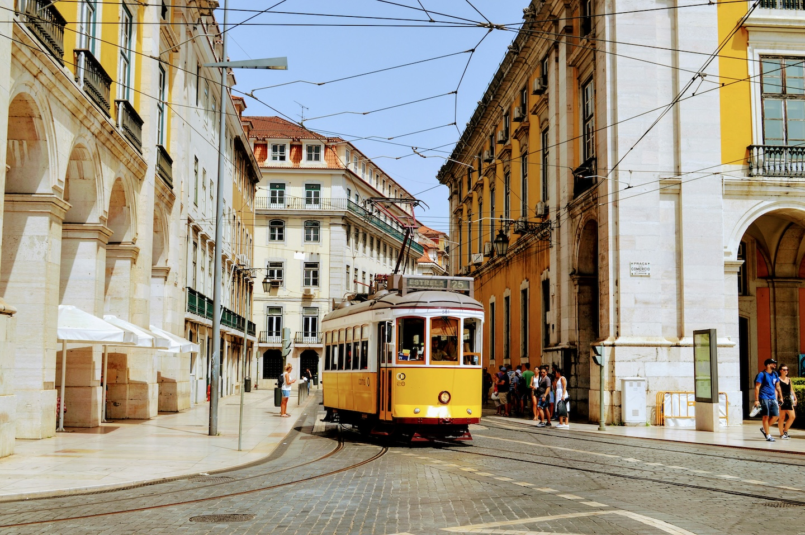

My Experience as an Erasmus Student in Portugal
Portugal was one of the calmest countries I have ever lived in. Its population is around 10 million, which is even less than the population of Istanbul alone. That difference was easy to feel in daily life. The streets, the pace, and even the general atmosphere felt quieter and more relaxed. Portugal also has one of the lowest crime rates in Europe, which made the country feel even more peaceful.
You write with pens in exams.
This was one of the first small surprises I experienced as a student there.
In Portugal, at least at the university where I studied, exams had to be written in pen, not pencil. I learned this the hard way during an exam. I had written all my answers in pencil, assuming that was normal, and then found out I had to use a pen instead. So I erased everything and rewrote my answers. Luckily, I had enough time.
Until that moment, I had thought writing with a pencil during exams was universal. After all, what if you make a mistake? But in Portugal, the rules were different.
You need the official template for your answer sheet.
Another thing I did not expect was the answer sheet system.
A plain A4 sheet of paper was not allowed. Instead, students had to use an official template. This might have been specific to the university where I studied, and I hope it was, because I found it a little unnecessary. To get the template, students had to go to the library and print it using the school printer. It was not expensive, but it was still not free.
Thankfully, one of my friends told me about this before my exams. Because of that, I had time to print the template and prepare properly. Otherwise, I might not have been able to take the tests at all.
Cellular plans are much easier to use.
Outside university life, one of the most convenient differences was getting a SIM card.
In Turkey, buying a SIM card can be a long and tiring process. There are forms, procedures, and usually a lot of waiting. In Portugal, it was much simpler. You pay, get the card, put it in your phone, and start using it.
Mobile data was also much cheaper per gigabyte than I expected. For a student, especially one living abroad, that made daily life much easier.
Buses are rare.
Transportation, however, was not always convenient.
This might have been specific to the small town where I studied, but buses were not very frequent. If you missed one, you often had to wait at least 45 minutes for the next one. That meant you had to plan your day around the bus schedule, especially if you had classes, appointments, or plans with friends.
I really wish the buses had been more frequent, because that would have made life in a small town much easier.
Overall, though, my experience in Portugal was beautiful. I like small, calm places, and Portugal gave me exactly that kind of environment. It was peaceful, simple, and easy to live in. For me, it was a great place to study, work, and experience a different way of life.